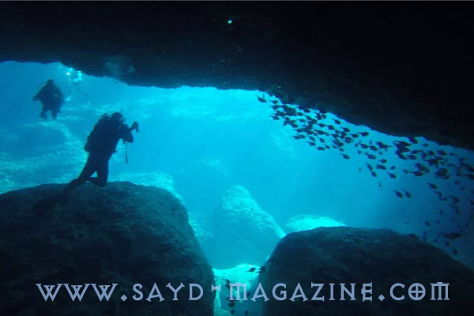
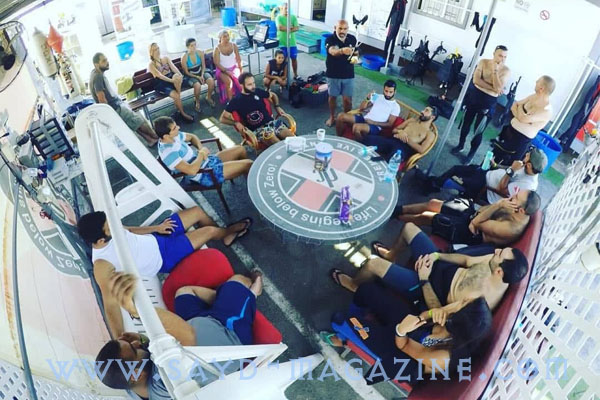
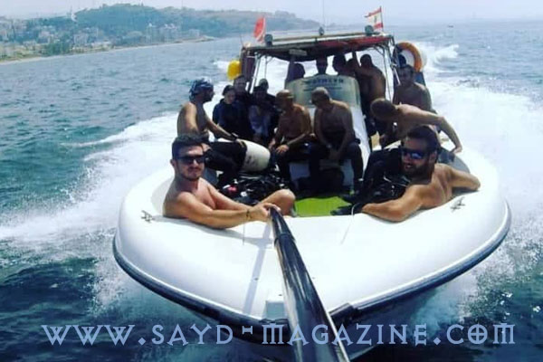
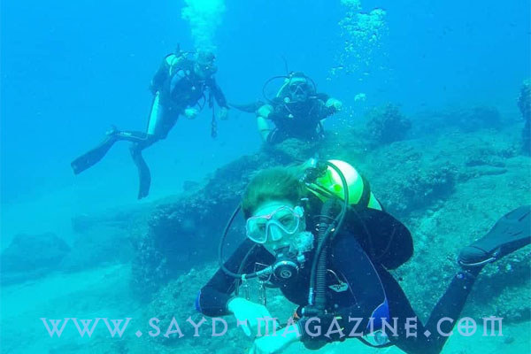
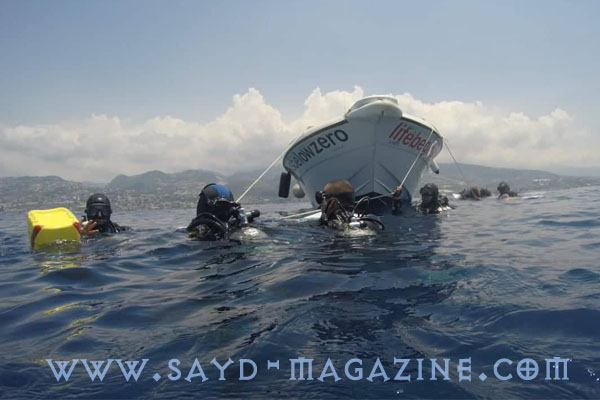
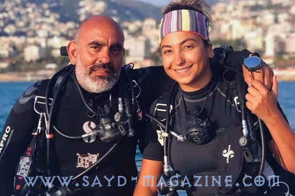
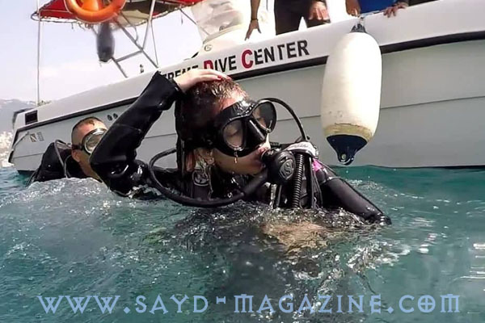
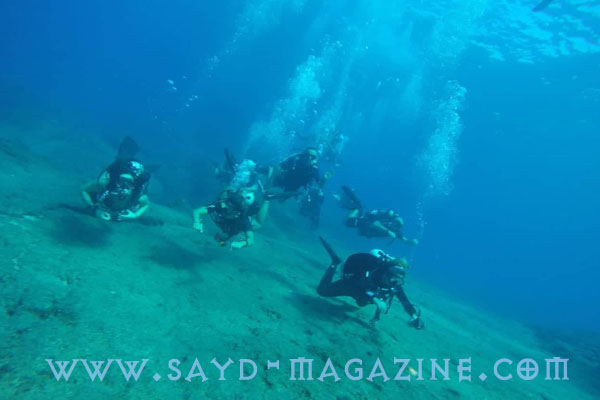

سليم مجاعص رئيس نادي Xtreme Dive Center Lebanon - XDC مدرّب وخبيرعاشق للبحر والمغامرة، يعيش مزاجه فوق الماء بالفرح والضحك وتحت الماء بالجدية المناسبة والمسؤولية القانونية للتمتع بمناظر عالم مدهش يرى فيه مكانا للروح اكثر من الجسد حيث يخف الوزن وينعدم الصوت ويكثر التأمل .. قال في اللقاء مع مجلة صيد :- الغوص ليس رياضة.. هو نشاط ترفيهي وكلفته مقبولة، وتجربته مدهشة جداً. - لدينا أكثر من 25 سفنينة غارقة منذ عام 1890 من الحرب العالمية الاولى والثانية وما بعدهما ..وهذا ما يشكل متحفاً غنياً ومهماً تحت مياهنا، قياساّ لطول الشاطئ.. - تحت الماء لا تشعر بجسمك او وزنك ولا تسمع صوتك.. انما فقط تشعر بروحك لهذا أرى الغوص سفر للروح. - يحتاج هذا النشاط على قوة قلب وشغف، وهو ليس خطرا اذا التزم الانسان بمعايير السلامة. - من يريد ممارسة الغوص يجب الا يكون مصابا بأمراض القلب او السكري او الربو. - في XDC نؤمن جميع خدمات الغوص من تجربة وترفيه وحتى منح اعلى الشهادات لكي يصبح الشخص مدرباً. - المرأة تجعل كل رياضة اونشاط ترفيهي جميلا بوجودها. - نضحك كثيرا فوق الماء وحين نغوص نعمل بجدية لمنع حدث اي خطأ. - لدينا مشكلة عدم مسؤولية الدولة تجاه البحر . بالرغم من ان الرياضات والنشاطات البحرية تستقطب السيّاح وتنعش الاقتصاد . - بحرنا صالح للغوص ..حين نبتعد عن بيروت..














